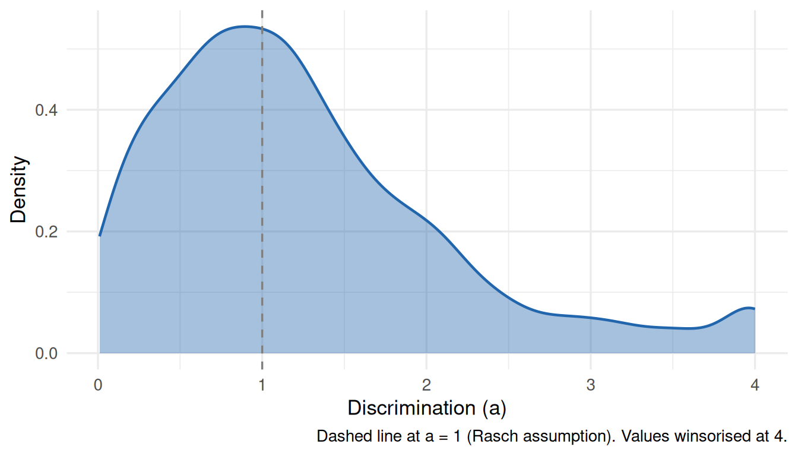

2PL Discrimination Parameters Across Cognitive Datasets
A Tier 2 IRW vignette demonstrating multi-dataset IRT analysis. We use irw_filter() to select dichotomous cognitive/educational datasets, fit a 2PL model to each, and examine what discrimination parameters look like in the wild.
Research question
Item discrimination — the a parameter in a 2PL model — captures how sharply an item separates high- and low-ability respondents. Methodologists often assume a ≈ 1 as a starting point (the Rasch model), but real data are messier. How variable is discrimination across cognitive and educational instruments in practice? And how consequential is the Rasch constraint of fixing a = 1?
The IRW makes this question tractable: we can filter for dichotomous cognitive datasets, fit a 2PL to each, and examine the resulting distribution of a estimates across instruments. What would otherwise require assembling dozens of datasets by hand is a few lines of code.
Step 1: Select datasets using metadata
We use irw_filter() to find dichotomous datasets (n_categories == 2) tagged as Cognitive/educational, with at least 10 items and 500 respondents, and a response density above 0.8 to avoid sparse matrices that destabilise 2PL estimation.
Code
cognitive_tables <-irw_filter(construct_type ="Cognitive/educational",n_categories =2, # dichotomous onlyn_items =c(10, 60), # at least 10 items, at most 60n_participants =c(500, Inf), # need enough respondents for stable estimationdensity =c(0.8, 1.0) # avoid sparse response matrices)
This selected 66 datasets from the IRW (as of April 2026).
Note
To reproduce with current IRW holdings, re-run 2pl_across_datasets_compute.R and commit the updated 2pldata/2pl_across_datasets_results.rds.
Step 2: Fit a 2PL to each dataset
We write a function that (1) fetches a table, (2) downsamples to at most 10,000 respondents to keep memory use manageable, (3) reshapes from long to wide format, (4) fits a 2PL in mirt, and (5) extracts item parameter estimates. We then map() over all selected tables.
The lognormal prior on a (lnorm, 0.0, 1.0) keeps discrimination estimates positive and prevents runaway values for poorly behaved items, while remaining weak enough to let the data speak.
Code
fit_2pl <-function(table_name) { mirt::mirt.options(cores =1) # prevent mirt from spawning its own threads df <-tryCatch(irw_fetch(table_name), error =function(e) NULL)if (is.null(df)) return(NULL)# Downsample to at most 10,000 respondents before reshaping unique_ids <-unique(df$id)if (length(unique_ids) >10000) { df <- df[df$id %in%sample(unique_ids, 10000), ] } resp <-irw_long2resp(df) resp$id <-NULL# Drop zero-variance items resp <- resp[, sapply(resp, function(x) length(unique(na.omit(x))) >1), drop =FALSE]if (ncol(resp) <5) return(NULL) ni <-ncol(resp) model_spec <-mirt.model(paste0("F = 1-", ni, "\n","PRIOR = (1-", ni, ", a1, lnorm, 0.0, 1.0)" )) fit <-tryCatch(mirt(resp, model_spec, itemtype =rep("2PL", ni),method ="EM", technical =list(NCYCLES =500), verbose =FALSE),error =function(e) NULL )if (is.null(fit)) return(NULL) params <-coef(fit, IRTpars =TRUE, simplify =TRUE)$itemstibble(table = table_name,item =rownames(params),a = params[, "a"],b = params[, "b"] )}# Run in parallel; each result written to disk as it completes# (see 2pl_across_datasets_compute.R for full details)all_results <-map(cognitive_tables, fit_2pl) |>compact() |>bind_rows()
Step 3: Examine discrimination distributions
Distribution of a across all items
Code
all_results |>mutate(a_win =pmin(a, 4)) |>ggplot(aes(x = a_win)) +geom_density(fill ="#2166ac", colour ="#2166ac", alpha =0.4, linewidth =0.8) +geom_vline(xintercept =1, linetype ="dashed", colour ="grey40") +labs(x ="Discrimination (a)",y ="Density",caption ="Dashed line at a = 1 (Rasch assumption). Values winsorised at 4." ) +theme_minimal(base_size =13)

Figure 1: Distribution of 2PL discrimination parameters (a) across cognitive datasets. Estimates > 4 are winsorised for display. Dashed line marks a = 1 (the Rasch assumption).
Dataset-level medians
Each point below is one IRW table. This shows whether the pattern is consistent across datasets or driven by a few outliers.
Code
dataset_summary <- all_results |>group_by(table) |>summarise(median_a =median(a, na.rm =TRUE),n_items =n(),.groups ="drop" ) |>arrange(median_a) |>mutate(rank =row_number(),tooltip =paste0("Dataset: ", table,"<br>Median a: ", round(median_a, 3),"<br>Items: ", n_items ) )p <-ggplot(dataset_summary, aes(x = rank, y = median_a, text = tooltip)) +geom_point(aes(size = n_items), colour ="#2166ac", alpha =0.7) +geom_hline(yintercept =1, linetype ="dashed", colour ="grey40") +scale_size_continuous(range =c(2, 7), name ="# items") +labs(x ="Dataset (ranked by median a)",y ="Median discrimination (a)" ) +theme_minimal(base_size =13)ggplotly(p, tooltip ="text") |>layout(annotations =list(list(text =paste0(nrow(dataset_summary), " datasets; dashed line at a = 1 (Rasch assumption). Hover to identify datasets."),showarrow =FALSE,xref ="paper", yref ="paper",x =0, y =-0.12,xanchor ="left", yanchor ="top",font =list(size =11, color ="grey50") )) )
Figure 2: Per-dataset median discrimination, ordered by value. Point size reflects number of items.
Table 1: Summary of 2PL discrimination estimates across cognitive datasets
Datasets
Items
Mean a
Median a
SD a
% above 1.0
63
1860
1.355
1.076
1.622
54.5
What to notice
The Rasch assumption. The dashed line at a = 1 marks where the Rasch model parks every item. If the distribution is centred well above 1, or has a long right tail, that suggests the equal-discrimination constraint is doing real work — and possibly distorting person ability estimates for items at the extremes.
Between-dataset variance. The per-dataset median plot is often more informative than the pooled density. If median a varies widely across datasets, that points to instrument design or sample homogeneity as a driver, not just item-level noise.
Limitations. We downsample to 10,000 respondents per dataset, so estimates for large-scale assessments are based on a random subset. For the purpose of characterising the distribution of a this is acceptable — 10,000 respondents is more than enough for stable 2PL estimation — but it means we are not using the full IRW data. Some tables may also come from the same instrument administered in different populations; irw_info() can help identify these.
Extending this vignette
Model fit comparison. For each dataset, compare Rasch vs. 2PL using M2() fit statistics or IMV (see the IMV tutorial). Where does freeing discrimination actually improve fit?
Difficulty coverage. The all_results object also contains b parameters. How does the range of item difficulties vary across instruments?
Construct type granularity. Re-run with other construct_type values to compare discrimination patterns across domains.
Reproducibility
Results on this page were computed on April 24, 2026 using 66 IRW tables. To reproduce:
# 1. Re-run the compute script (from project root)source("2pl_across_datasets_compute.R")# 2. Re-render this pagequarto::quarto_render("2pl_across_datasets.qmd")
Tip
To cite the datasets used, run:
for (tbl in cognitive_tables) {irw_save_bibtex(tbl, output_file ="2pldata/irw_references.bib", append =TRUE)}